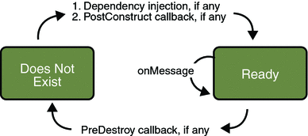

Using the JMS API in a Java EE Application
This section describes the ways in which using the JMS API in a Java EE application differs from using it in a stand-alone client application:
Using Session Beans to Produce and to Synchronously Receive Messages
Using Message-Driven Beans to Receive Messages Asynchronously
Using the JMS API with Application Clients and Web Components
A general rule in the Java EE platform specification applies to all Java EE components that use the JMS API within EJB or web containers:
Application components in the web and EJB containers must not attempt to create more than one active (not closed) Session object per connection.
This rule does not apply to application clients.
Using @Resource Annotations in Java EE Components
When you use the @Resource annotation in an application client component, you normally declare the JMS resource static:
@Resource(mappedName="jms/ConnectionFactory") private static ConnectionFactory connectionFactory; @Resource(mappedName="jms/Queue") private static Queue queue;
However, when you use this annotation in a session bean, a message-driven bean, or a web component, do not declare the resource static:
@Resource(mappedName="jms/ConnectionFactory") private ConnectionFactory connectionFactory; @Resource(mappedName="jms/Topic") private Topic topic;
If you declare the resource static, runtime errors will result.
Using Session Beans to Produce and to Synchronously Receive Messages
A Java EE application that produces messages or synchronously receives them can use a session bean to perform these operations. The example in A Java EE Application That Uses the JMS API with a Session Bean uses a stateless session bean to publish messages to a topic.
Because a blocking synchronous receive ties up server resources, it is not a good programming practice to use such a receive call in an enterprise bean. Instead, use a timed synchronous receive, or use a message-driven bean to receive messages asynchronously. For details about blocking and timed synchronous receives, see Writing the Client Programs for the Synchronous Receive Example.
Using the JMS API in a Java EE application is in many ways similar to using it in a stand-alone client. The main differences are in resource management and transactions.
Resource Management
The JMS API resources are a JMS API connection and a JMS API session. In general, it is important to release JMS resources when they are no longer being used. Here are some useful practices to follow.
If you wish to maintain a JMS API resource only for the life span of a business method, it is a good idea to close the resource in a finally block within the method.
If you would like to maintain a JMS API resource for the life span of an enterprise bean instance, it is a good idea to use a @PostConstruct callback method to create the resource and to use a @PreDestroy callback method to close the resource. If you use a stateful session bean and you wish to maintain the JMS API resource in a cached state, you must close the resource in a @PrePassivate callback method and set its value to null, and you must create it again in a @PostActivate callback method.
Transactions
Instead of using local transactions, you use container-managed transactions for bean methods that perform sends or receives, allowing the EJB container to handle transaction demarcation. Because container-managed transactions are the default, you do not have to use an annotation to specify them.
You can use bean-managed transactions and the javax.transaction.UserTransaction interface’s transaction demarcation methods, but you should do so only if your application has special requirements and you are an expert in using transactions. Usually, container-managed transactions produce the most efficient and correct behavior. This tutorial does not provide any examples of bean-managed transactions.
Using Message-Driven Beans to Receive Messages Asynchronously
The sections What Is a Message-Driven Bean? and How Does the JMS API Work with the Java EE Platform? describe how the Java EE platform supports a special kind of enterprise bean, the message-driven bean, which allows Java EE applications to process JMS messages asynchronously. Session beans allow you to send messages and to receive them synchronously but not asynchronously.
A message-driven bean is a message listener that can reliably consume messages from a queue or a durable subscription. The messages can be sent by any Java EE component (from an application client, another enterprise bean, or a web component) or from an application or a system that does not use Java EE technology.
Like a message listener in a stand-alone JMS client, a message-driven bean contains an onMessage method that is called automatically when a message arrives. Like a message listener, a message-driven bean class can implement helper methods invoked by the onMessage method to aid in message processing.
A message-driven bean, however, differs from a stand-alone client’s message listener in the following ways:
Certain setup tasks are performed by the EJB container.
The bean class uses the @MessageDriven annotation to specify properties for the bean or the connection factory, such as a destination type, a durable subscription, a message selector, or an acknowledgment mode. The examples in Chapter 32, Java EE Examples Using the JMS API show how the JMS resource adapter works in the Application Server.
The EJB container automatically performs several setup tasks that a stand-alone client has to do:
Creating a message consumer to receive the messages. Instead of creating a message consumer in your source code, you associate the message-driven bean with a destination and a connection factory at deployment time. If you want to specify a durable subscription or use a message selector, you do this at deployment time also.
Registering the message listener. You must not call setMessageListener.
Specifying a message acknowledgment mode. The default mode, AUTO_ACKNOWLEDGE, is used unless it is overriden by a property setting.
If JMS is integrated with the application server using a resource adapter, the JMS resource adapter handles these tasks for the EJB container.
Your message-driven bean class must implement the javax.jms.MessageListener interface and the onMessage method.
It may implement a @PostConstruct callback method to create a connection, and a @PreDestroy callback method to close the connection. Typically, it implements these methods if it produces messages or does synchronous receives from another destination.
The bean class commonly injects a MessageDrivenContext resource, which provides some additional methods that you can use for transaction management.
The main difference between a message-driven bean and a session bean is that a message-driven bean has no local or remote interface. Instead, it has only a bean class.
A message-driven bean is similar in some ways to a stateless session bean: Its instances are relatively short-lived and retain no state for a specific client. The instance variables of the message-driven bean instance can contain some state across the handling of client messages: for example, a JMS API connection, an open database connection, or an object reference to an enterprise bean object.
Like a stateless session bean, a message-driven bean can have many interchangeable instances running at the same time. The container can pool these instances to allow streams of messages to be processed concurrently. The container attempts to deliver messages in chronological order when it does not impair the concurrency of message processing, but no guarantees are made as to the exact order in which messages are delivered to the instances of the message-driven bean class. Because concurrency can affect the order in which messages are delivered, you should write your applications to handle messages that arrive out of sequence.
For example, your application could manage conversations by using application-level sequence numbers. An application-level conversation control mechanism with a persistent conversation state could cache later messages until earlier messages have been processed.
Another way to ensure order is to have each message or message group in a conversation require a confirmation message that the sender blocks on receipt of. This forces the responsibility for order back on the sender and more tightly couples senders to the progress of message-driven beans.
To create a new instance of a message-driven bean, the container does the following:
Instantiates the bean
Performs any required resource injection
Calls the @PostConstruct callback method, if it exists
To remove an instance of a message-driven bean, the container calls the @PreDestroy callback method.
Figure 31-11 shows the life cycle of a message-driven bean.
Figure 31-11 Life Cycle of a Message-Driven Bean
Managing Distributed Transactions
JMS client applications use JMS API local transactions (described in Using JMS API Local Transactions), which allow the grouping of sends and receives within a specific JMS session. Java EE applications commonly use distributed transactions to ensure the integrity of accesses to external resources. For example, distributed transactions allow multiple applications to perform atomic updates on the same database, and they allow a single application to perform atomic updates on multiple databases.
In a Java EE application that uses the JMS API, you can use transactions to combine message sends or receives with database updates and other resource manager operations. You can access resources from multiple application components within a single transaction. For example, a servlet can start a transaction, access multiple databases, invoke an enterprise bean that sends a JMS message, invoke another enterprise bean that modifies an EIS system using the Connector architecture, and finally commit the transaction. Your application cannot, however, both send a JMS message and receive a reply to it within the same transaction; the restriction described in Using JMS API Local Transactions still applies.
Distributed transactions within the EJB container can be either of two kinds:
Container-managed transactions: The EJB container controls the integrity of your transactions without your having to call commit or rollback. Container-managed transactions are recommended for Java EE applications that use the JMS API. You can specify appropriate transaction attributes for your enterprise bean methods.
Use the Required transaction attribute (the default) to ensure that a method is always part of a transaction. If a transaction is in progress when the method is called, the method will be part of that transaction; if not, a new transaction will be started before the method is called and will be committed when the method returns.
Bean-managed transactions: You can use these in conjunction with the javax.transaction.UserTransaction interface, which provides its own commit and rollback methods that you can use to delimit transaction boundaries. Bean-managed transactions are recommended only for those who are experienced in programming transactions.
You can use either container-managed transactions or bean-managed transactions with message-driven beans. To ensure that all messages are received and handled within the context of a transaction, use container-managed transactions and use the Required transaction attribute (the default) for the onMessage method. This means that if there is no transaction in progress, a new transaction will be started before the method is called and will be committed when the method returns.
When you use container-managed transactions, you can call the following MessageDrivenContext methods:
setRollbackOnly: Use this method for error handling. If an exception occurs, setRollbackOnly marks the current transaction so that the only possible outcome of the transaction is a rollback.
getRollbackOnly: Use this method to test whether the current transaction has been marked for rollback.
If you use bean-managed transactions, the delivery of a message to the onMessage method takes place outside the distributed transaction context. The transaction begins when you call the UserTransaction.begin method within the onMessage method, and it ends when you call UserTransaction.commit or UserTransaction.rollback. Any call to the Connection.createSession method must take place within the transaction. If you call UserTransaction.rollback, the message is not redelivered, whereas calling setRollbackOnly for container-managed transactions does cause a message to be redelivered.
Neither the JMS API specification nor the Enterprise JavaBeans specification (available from http://java.sun.com/products/ejb/) specifies how to handle calls to JMS API methods outside transaction boundaries. The Enterprise JavaBeans specification does state that the EJB container is responsible for acknowledging a message that is successfully processed by the onMessage method of a message-driven bean that uses bean-managed transactions. Using bean-managed transactions allows you to process the message by using more than one transaction or to have some parts of the message processing take place outside a transaction context. In most cases, however, container-managed transactions provide greater reliability and are therefore preferable.
When you create a session in an enterprise bean, the container ignores the arguments you specify, because it manages all transactional properties for enterprise beans. It is still a good idea to specify arguments of true and 0 to the createSession method to make this situation clear:
session = connection.createSession(true, 0);
When you use container-managed transactions, you normally use the Required transaction attribute (the default) for your enterprise bean’s business methods.
You do not specify a message acknowledgment mode when you create a message-driven bean that uses container-managed transactions. The container acknowledges the message automatically when it commits the transaction.
If a message-driven bean uses bean-managed transactions, the message receipt cannot be part of the bean-managed transaction, so the container acknowledges the message outside the transaction.
If the onMessage method throws a RuntimeException, the container does not acknowledge processing the message. In that case, the JMS provider will redeliver the unacknowledged message in the future.
Using the JMS API with Application Clients and Web Components
An application client in a Java EE application can use the JMS API in much the same way that a stand-alone client program does. It can produce messages, and it can consume messages by using either synchronous receives or message listeners. See Chapter 23, A Message-Driven Bean Example for an example of an application client that produces messages. For an example of using an application client to produce and to consume messages, see An Application Example That Deploys a Message-Driven Bean on Two Servers.
The Java EE platform specification does not impose strict constraints on how web components should use the JMS API. In the Application Server, a web component can send messages and consume them synchronously but cannot consume them asynchronously.
Because a blocking synchronous receive ties up server resources, it is not a good programming practice to use such a receive call in a web component. Instead, use a timed synchronous receive. For details about blocking and timed synchronous receives, see Writing the Client Programs for the Synchronous Receive Example.